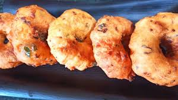
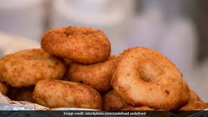
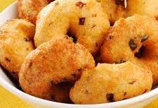
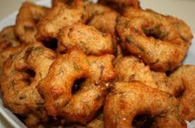
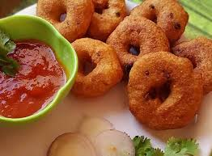

Rava Vada






Ingredients
- 1 cup fine rava
- ½ cup chopped onions
- 1 teaspoon finely chopped ginger
- 1 or 2 green chilies
- 2 tablespoons chopped coriander leaves
- 7 to 8 curry leaves
- ½ teaspoon cumin seeds
- 10 to 12 whole black peppercorns
- ⅓ to ½ cup fresh or sour curd
- ¼ teaspoon baking soda
- salt as required
- oil as required, for deep frying
- In a mixing bowl or pan take 1 cup fine rava (sooji or cream of wheat). Do note that the rava is not roasted.
- Then add ½ cup chopped onions, 1 teaspoon finely chopped ginger, 1 or 2 chopped green chilies, 2 tablespoons chopped coriander leaves and 7 to 8 chopped curry leaves.
- Then add ½ teaspoon cumin seeds and 10 to 12 whole black peppercorns, crushed.
- Next add ⅓ to ½ cup fresh or sour curd. Depending on the quality of rava you can add ⅓ to ½ cup curd (dahi or yogurt).
- Now add ¼ teaspoon baking soda and salt as required.
- First begin to mix the mixture.
- Then mix and gather the mixture together. Do not knead. Mixture should be thick but also should have enough moisture or else rava vada will become hard. you can add 1 to 2 tablespoons more water it the mixture looks very thick.
- Once everything is mixed well then cover the bowl and let the rava vada mixture rest at room temperature for 20 to 25 minutes. In case the mixture looks dry, then you can add 1 to 2 tablespoons water and mix again.
- Grease your palms with some oil and make small to medium sized balls from the vada mixture.
- Place them on a zip lock bag or plantain leaf. flatten them a bit, but not too much.
- then make a depression in the center.
- Heat oil for deep frying in a kadai or pan. Check a small piece of vada in the hot oil. If it comes up gradually and steadily on top the vada can be fried.
- Now gently remove the vada from the zip lock bag and gently place it in the oil.
- Fry rava vada on medium flame. Depending on the size of the kadai you can fry less or more vada.
- When one side is light golden, then gently turn over each vada with a slotted spoon.
- Continue to fry all rava vada till crisp and golden and turn over as needed.
- Fry till the rava vada become golden.
- Remove with a slotted spoon draining the excess oil.
- Place the fried rava vada on kitchen paper towel. Same way fry remaining vada.
- Place the fried rava vada on kitchen paper towel. Same way fry remaining vada.